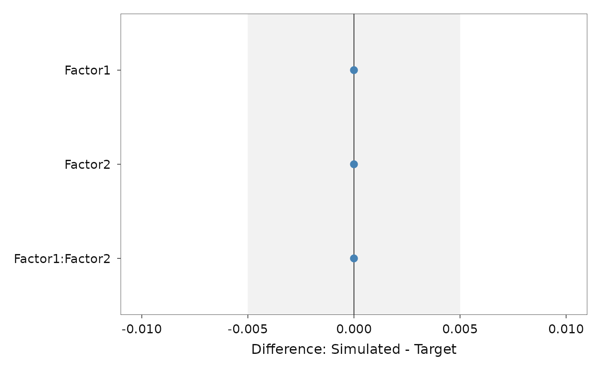

Uses simulated annealing to generate raw data that reproduce target ANOVA F-statistics and group means under a specified factorial design.
Usage
optim_aov(
S,
levels,
target_group_means,
target_f_list,
integer,
range,
formula,
factor_type,
subgroup_sizes = NULL,
thresh = 0.005,
max_iter = 30000,
init_temp = 0.001,
cooling_rate = NULL,
max_starts = 3,
progress_mode = "console"
)Arguments
- S
Integer. Total number of subjects.
- levels
Integer vector. Number of levels per factor.
- target_group_means
Numeric vector of length
prod(levels). Target cell means in lexicographic sort order: Factor1 slowest, Factor2 fastest, i.e. 11, 12, 21, 22 for a 2x2.- target_f_list
List with components
effect(character) andF_value(numeric) of equal length.- integer
Logical. Generate integer-valued data?
- range
Numeric vector of length 2. Bounds for individual observations.
- formula
Formula or character. ANOVA model formula.
- factor_type
Character vector (
"between"/"within") matching length oflevels.- subgroup_sizes
Optional numeric vector of between-group sizes (must sum to
S).- thresh
Numeric. Convergence threshold. Default
5e-3.- max_iter
Integer. Iterations per restart. Default
3e4.- init_temp
Numeric. Initial SA temperature. Default
1e-3.- cooling_rate
Numeric in (0,1) or
NULL(auto). DefaultNULL.- max_starts
Integer. Number of restarts. Default
3.- progress_mode
Character:
"console","shiny", or"off". Default"console".
Value
An object of class stats2data_aov, a list with components best_objective,
data, inputs, adjusted_targets, and
track_objective.
Examples
# \donttest{
# 2 x 2 between-subjects design, 10 subjects per cell
res <- optim_aov(
S = 40,
levels = c(2, 2),
target_group_means = c(5.1, 4.2, 6.3, 5.0),
target_f_list = list(effect = c("Factor1", "Factor2", "Factor1:Factor2"),
F_value = c(5.0, 6.05, 0.2)),
integer = FALSE,
range = c(0, 10),
formula = "outcome ~ Factor1 * Factor2",
factor_type = c("between", "between"),
progress_mode = "off"
)
summary(res)
#> Registered S3 method overwritten by 'lme4':
#> method from
#> na.action.merMod car
#> Contrasts set to contr.sum for the following variables: Factor1, Factor2
#> Contrasts set to contr.sum for the following variables: Factor1, Factor2
#> stats2data ANOVA Summary
#> -----------------------------------------------
#> Design: 2 x 2 (between, between)
#> Subjects:
#> Best objective: 5.65992e-12
#>
#> RMSE
#> F-statistics: 1.666e-11
#> Group means: 9.395e-13
#>
#> -----------------------------------------------
#> F-values (Target vs. Simulated):
#> effect target_F sim_F
#> Factor1 5.00 5.00
#> Factor2 6.05 6.05
#> Factor1:Factor2 0.20 0.20
#>
#> -----------------------------------------------
#> Group Means (Target vs. Simulated):
#> cell target_mean sim_mean
#> F1=1, F2=1 5.1 5.1
#> F1=1, F2=2 4.2 4.2
#> F1=2, F2=1 6.3 6.3
#> F1=2, F2=2 5.0 5.0
plot_fit(res, standardised = FALSE)
#> Contrasts set to contr.sum for the following variables: Factor1, Factor2

# }